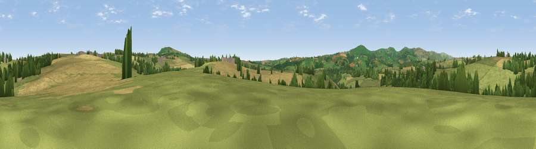

Viewpoint near South Hill
#33058 in England · top 71% of its area beats it · near South HillWhere it is
The exact computed spot (SX 32525 73475). Click the marker for map links.
The view, rendered

A 360° render of this exact spot computed from the terrain model, tree cover and land cover — summer colours, afternoon light, calibrated against photographs of famous viewpoints. Real trees, hedges and buildings will differ in detail.
The panorama
Grey silhouette: terrain skyline in each direction (720 bearings, Earth curvature and refraction included). Dashed green: skyline with trees (+15 m) and buildings (+8 m) as obstacles. Blue strip: how far the ground is visible on each bearing.
Where the view opens
Wedge length = distance to the farthest visible ground on that bearing (vegetation-aware). Rings at 10, 25 and 50 km.
What fills the view
58% grassland · 31% cropland · 10% woodland ·
Angular shares of the visible panorama (visual magnitude), not map area. Landscape diversity 0.41 (0–1 Shannon).
Key numbers
More beautiful places nearby
The staircase of upgrades: each row has a higher view potential than everything closer. Driving times are estimates from straight-line distance, calibrated against real road routing — check an actual route before setting out.
| Place | Direction | Drive | Score |
|---|---|---|---|
| Viewpoint near Downgate | E · 2 km | ~6 min | 61.9 |
| Viewpoint near Kelly Bray | ESE · 5 km | ~11 min | 73.8 |
| Kit Hill | ESE · 5 km | ~12 min | 80.3 |
| Viewpoint near Downderry | S · 19 km | ~33 min | 81.5 |
| Viewpoint near Downderry | S · 19 km | ~33 min | 83.5 |
| Viewpoint near Polperro | SSW · 26 km | ~42 min | 83.7 |
| Viewpoint near Lesnewth | NW · 28 km | ~45 min | 87.7 |
| Viewpoint near Crackington Haven | NW · 28 km | ~45 min | 88.1 |
50.53701, -4.36469 · source: screening · position refined by local search. Computed location — check access rights before visiting.